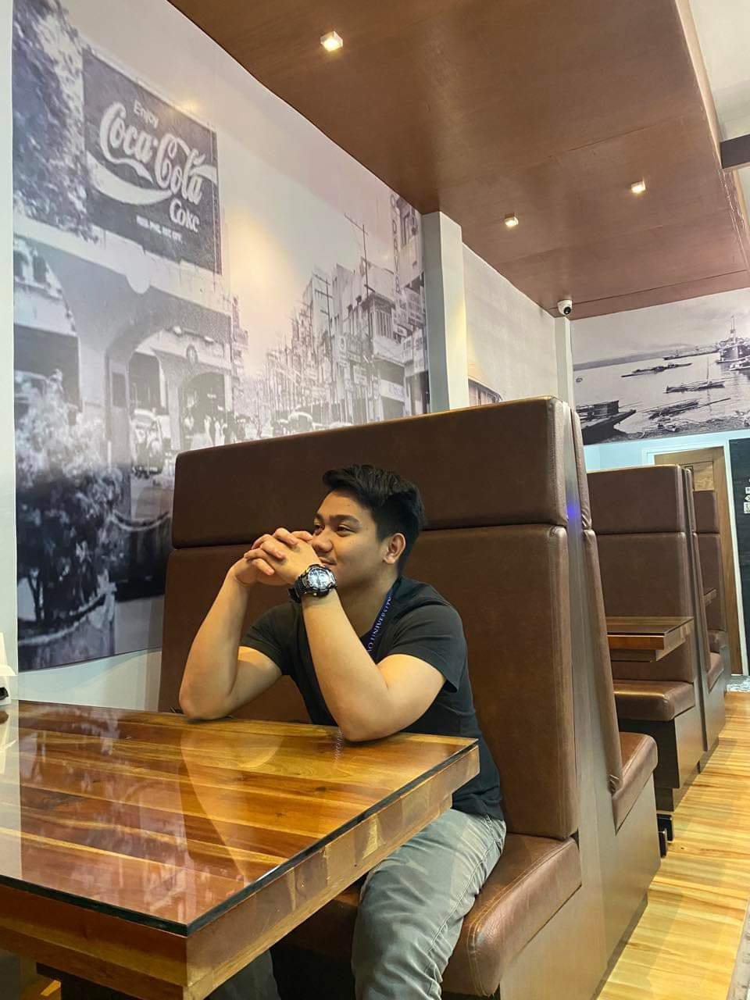

About Us
We are Vlad and Jasper, and we thank you for taking the time to visit our site.
this website was made with effort, passion, and love by Vlad. While the contents, images, and other media, were provided by Jasper.
We are proud to share this to you despite the time constraints (Vlad barely slept to program this site and get it running haha.)
this website was made with effort, passion, and love by Vlad. While the contents, images, and other media, were provided by Jasper.
We are proud to share this to you despite the time constraints (Vlad barely slept to program this site and get it running haha.)
Vladimier P. Juliano
An IT Freshman of the Ateneo de Davao university, was born in September 4, 2002.
He enjoys gaming, making music, and writing and designing webpages on his free time.
He excels most on Esports, and and has excellent sense of rhythm.
He enjoys gaming, making music, and writing and designing webpages on his free time.
He excels most on Esports, and and has excellent sense of rhythm.
"Stay Hungry, Stay Foolish."
-steve jobs
-steve jobs

Jasper MC F. Solilap
A PolSci Freshman of the Ateneo de Davao University, was born in August 2, 2004.
He enjoys playing sports, working out, playing games, and reading books.
He excels most on writing poems, and creative writing.
He enjoys playing sports, working out, playing games, and reading books.
He excels most on writing poems, and creative writing.
"I'm Jasper MC F. Solilap, I live in Poblacion 7, Midsayap Cotabato.
19 years old and naniniwala sa kasabihang
"Kung kaya gawin ng iba, sa kanila mo ipagawa" and I thank you!"